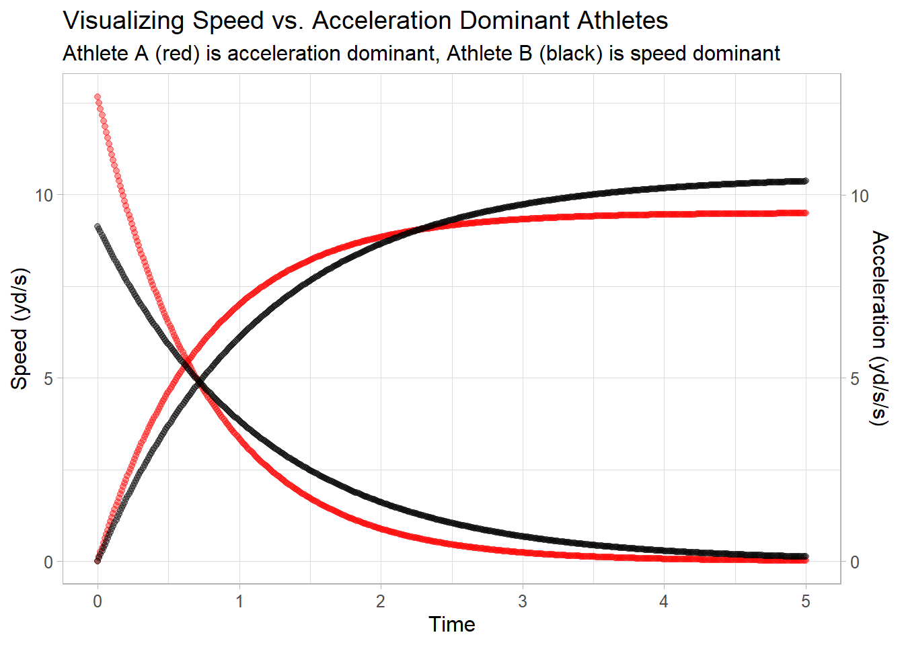

Big Data Bowl 2021 Submission
5 Seconds or Less: Modeling player biomechanics to predict pass outcomes
1 Introduction
The 40-yard dash is one of the most exciting events tested at the NFL Combine. Prospects set-up in a three-point stance and, after a brief pause, start of their own volition. Time begins when the hand is released from the ground and stops when the player breaks the plane at 40 yards. Sprint times are typically five seconds or less.
In those five seconds, players display their ability to produce force and power. Within position groups, the fastest players are drafted earlier and have more career success. Unfortunately, much of the data surrounding their career success and abilities are descriptive in nature. Research has also shown that the fastest 40-yard splits are run by players with the greatest top-speeds. Yet there is very little evidence that the 40-yard dash translates to an athlete’s on-field mechanical sprint abilities.
Players rarely reach their top-speed during games. Passing plays that last 4 to 6 seconds challenge receivers to create space between themselves and the defender. It is their ability to juke, deke, cut, and feint that creates this space. Conversely, defenders attempt to remain in proximity of the receiver by mirroring these changes in speed and direction. These factors affect a player’s ability to reach their top-speed.
This paper explores the relationship between an athlete’s sprint kinetics and pass completion rates. Specifically, it aims to explore whether modeling an athlete’s mechanical sprint profile to cover a given distance can influence pass outcomes. Background information on modeling an athlete’s mechanical sprint abilities is provided as a framework for new methodologies that can be applied in-game.
We'll never share or sell your email address. By subscribing, you agree with Revue’s Terms of Service and Privacy Policy.
2 Athlete Biomechanics
Furusawa and colleagues (1927) first modeled sprint kinetics and kinematics by analyzing a sprinter’s center of mass while running. Their approach utilizing inverse dynamics was a simple method of assessing a sprinter’s biomechanical abilities and horizontal force production. The methods Furusawa and colleagues (1927) introduced remain steadfast in the face of technological advancements.
Modeling sprint kinetics provides sports scientists with insight into a player’s lower-body neuromuscular potential. For example, this information provides practitioners with the understanding of an athlete’s strengths and weaknesses. Currently, player profiling is impractical when working with positional tracking data. Game data does not often comprise of players reaching maximal speeds with maximal effort, a key factor in force-velocity-power profiling. Instead, researchers resort to profiling athletes at the Combine’s 40-yard dash event. They hope that these athlete profiles translate to in-game sprint performance.
An emerging field in sports science is in-situ player profiling. This concept employs positional tracking data to model a player’s force-velocity-power profile. Doing so provides insight into how events like the 40-yard dash translate to on-field mechanical sprint capabilities. Presently there is only one publication, a proof-of-concept in men’s professional soccer, that utilizes GPS data to model force-velocity profiles. This submission expands on the in-situ concept in professional American Football.
2.1 Sprint Kinetics
There is very little difference between prospects’ mechanical abilities; within all position groups, fast and slow players express the same sprint kinetics. The area in which players differ is their ability to accelerate. Furusawa et al. (1927) discovered that all humans reach their maximal speeds following the function:
\[ v(t) = v_\max \cdot (1-e^\frac{-t}{\tau})\\ \]
where \(v(t)\) represents an athlete’s velocity at time \(t\), \(v_\max\) is an athlete’s maximum speed, and \(\tau\) is the acceleration constant calculated:
\[ \tau = \frac{v_\max} {a_\max} \]
where \(a_\max\) is an athlete’s maximum acceleration. Building on the functions above, acceleration was modeled:
\[ a(t) = (\frac {v_\max}{\tau}) \cdot e^\frac{-t}{\tau}\\ \]
where \(a(t)\) represents acceleration at time \(t\). Distance covered over time was also modeled:
\[ \Delta d (t)= v_\max \cdot ((t + \tau) \cdot e^\frac{-t}{\tau}) - (v_\max \cdot \tau) \]
where \(\Delta d (t)\) represents the distance travelled from point \(d_0\) to \(d_i\) at time \(t\).
The plot below shows two athletes: athlete A (red) is acceleration dominant whereas athlete B (black) is speed dominant. Although these athletes are different, it is the context of a play that displays their strengths.
2.2 Modernizing Old Models
To apply the models above, athletes must begin with zero velocity. This translates well to football because, all but one offensive athlete, cannot move until the ball is snapped. Unfortunately, unlike track sprinting, receivers rarely run linearly at maximal efforts. This hurdle makes it difficult to apply player profiling models in-game. If receivers are impeded during play, they risk losing speed and require more time to reach maximal velocity.
The concept is simple: which athlete reaches the intended destination first? Answering this question hinges on comparing athletes’ maximal potentials to cover distances in the time between the quarterback’s release of the ball and its arrival location. Thus, the models must be adjusted for time to be a function of velocity, acceleration, and distance.
Time as a function of velocity, detailing how long it takes an athlete to reach a given speed:
\[ v^{-1}(t) = ln[1- (\frac{v}{v_\max})]\cdot\tau \]
where \(v\) is an athlete’s current speed and \(0 \leq v < v_\max\).
Time as a function of distance, illustrating how long it takes to reach a position in space:
\[ \Delta d^{-1}(t) = \tau \cdot W(-e^\frac{1 - \Delta d}{\tau \cdot v_\max}) + \tau + \frac{\Delta d}{v_\max} \]
where \(W\) is the Lambert W function and defined as the inverse of \(xe^x\). That is:
\[ y=W(x)\iff x=ye^y \]
Finally, to model the speed reached, having travelled a given distance, the function is as follows:
\[ v^{-1}(\Delta d) = v_\max \cdot (t + \tau e^\frac{-t}{\tau}) - (v_\max \cdot \tau) \]
where \(t\) is equal to \(v^{-1}(t)\).
2.3 Midsprint
When the quarterback releases the ball, athletes rarely have zero velocity. The models above depend on individuals starting their run from a dead start. To understand how long it will take an athlete to cover a distance when in motion, the following function was derived:
\[ v^{-1}(\Delta d^{-1} (t)) = [\tau \cdot W(-e^\frac{1 - \Delta d + d_0}{\tau \cdot v_\max}) + \tau + \frac{\Delta d + d_0}{v_\max}] - [\tau \cdot W(-e^\frac{1 - d_0}{\tau \cdot v_\max}) + \tau + \frac{d_0}{v_\max}] \]
where \(d_0\) is equal to \(v^{-1}(\Delta d)\) when \(v = 0\). This function assumes that athletes are running at maximal effort when spanning distances.
3 Predicting Pass Outcomes
3.1 Nearest Defender
The defender closest to the receiver when the ball arrived was considered the primary defender. At the time of the ball’s release, players had unique locations on the field. Distances were calculated for the receiver and primary defender from their respective positions to where the ball arrived. The time interval between the release and arrival of the football was also recorded.
The assumption dictates that the nearest defender was also the primary defender. Although this assumption may not always apply, it simplifies analyses.
3.2 Calculating Outcomes
Based on player speed and field position, the least amount of time required to travel from their current position to the ball’s destination was modeled. The time required to run this distance was based on the athlete’s unique force-velocity-power profile. As such, modeled outcomes are founded on the athlete arriving at the intended position with maximal effort and without impediment. Finally, pass outcomes were decided on whichever athlete arrived at the target destination first (offense: completion, defense: incompletion).
All analyses were completed in R 4.0.2.
4 Results
There were 14,271 pass attempts that fit the inclusion criteria (11,022 completions, 3,249 incompletions). The average distance from the time-of-release to time-of-arrival was 5.32 yards and 7.89 yards for receivers and defenders, respectively. Receivers had a mean top speed of 10.6 yd/s and acceleration rate of 12.95 y/s/s (\(\tau\) = 0.82 s), whereas defenders displayed a mean top speed of 10.26 yd/s and acceleration of 9.55 y/s/s (\(\tau\) = 1.07 s). All details can be found in the table below.
The model correctly predicted pass outcomes 77.48% of the time (96.38% when the pass was successful, 14.41% when incomplete).
5 Discussion
This paper was influenced by the current literature surrounding force-velocity-power profiling from the NFL Combine’s 40-yard dash test. It provides a novel approach to modeling athletes’ mechanical sprint capabilities that utilizes positional tracking data. Presently, there is only one publication that also attempts to model athletes in-situ.
Outcomes were recorded as whichever athlete arrived first at the intended destination, based on their unique profile. The model accurately predicted pass outcomes nearly 4 out of 5 plays. Modeling pass outcomes in this paper presented unique challenges. The model cannot take game factors into account like interference, routes, contact, jukes, and dekes. Rather, it assumes that players are running linearly at maximal effort, without obstructions. As demonstrated, the outcomes heavily favoured pass completions. This can be attributed to the fact that the receiver knows their routes while defenders lag and must react to a receiver’s movements.
5.1 Positional F-V-P Profiles
Secondary analyses revealed that receivers are acceleration-dominant. Wide receivers and tight ends are heavily acceleration-dominant with \(\tau\) below 0.90 s. All other offensive positions are also acceleration-dominant but to a lesser degree. Defensively, only cornerbacks and safeties are acceleration-dominant with very similar maximal speed, maximal acceleration, and \(\tau\) values (0.83 s) as receivers. All other defensive positions display balanced or speed-dominant profiles.
5.2 Tuning the Model
A large proportion of receivers decelerate when receiving a pass. This deceleration might be due to quarterbacks poorly leading receivers while in stride, or the receiver’s attempt to secure the football. It was also found that most defenders accelerate increase between ball release and arrival. Defenders were also found to increase their speeds between ball arrival and pass reception. These factors affected pass completion rates.
The model inaccurately predicts incompletions nearly 85% of the time. Further exploration identified that when the defender lags a receiver by less than 0.51 seconds to the point of arrival, as modeled when starting with zero velocity, it significantly decreases pass completion rates. Ergo, the proximity of a defender to the receiver coupled with the receiver’s deceleration dictates that the defense heavily influences pass outcomes between ball arrival and ball securement.
The model was rerun with the parameter that passes marked incomplete if the defender lags the receiver by a maximum of 0.51 seconds to the point of arrival. Results from this model increased the accuracy of identifying pass incompletions nearly 55%, and improved overall accuracy to 87.7%.
6 Practical Applications
The 40-yard dash lasts 5 seconds or less. Much of the current research states that players with higher top speeds have better career success. The research does not explore the correlation between results at the Combine and on-field performance. This paper illustrates that wide receivers,tight ends, and corner acks heavily rely on their rates of acceleration in-game. Moreover, they rarely reach speeds on the field that were reached during the NFL Combine’s 40-yard dash test. Scouts should focus on an athlete’s rate of acceleration, not their top-speed or 40-yard split, when assessing athletic abilities. The formulas presented in this paper, and the accompanying R package midsprint, provides scouts with a novel method of assessing prospects.
We'll never share or sell your email address. By subscribing, you agree with Revue’s Terms of Service and Privacy Policy.